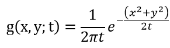
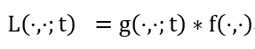

有些情况下，我们需要处理源自同一张图像的不同分辨率的图像集合。这些不同分辨率的图像组成的集合称为图像金字塔。
图像金字塔的主要类型可分为低通和带通
有两种常用图像金字塔：
- Gaussian Pyramid （低通）
- Laplacian Pyramids （带通）
之所以称为金字塔，是因为金字塔底部由大尺寸的原图组成，越往上层，尺寸越小，堆叠起来就是一个金字塔的形式：
金字塔的生成过程
- 低通金字塔：使用一个恰当的平滑filter对图像进行平滑处理，接着对平滑之后的图像进行下采样（subsampling），下采样因子通常为2.（分别对应各个坐标轴）。继续对得出的结果图像做相同的操作，重复这个步骤多次。每循环一次，会得出一副更小的、平滑程度更高的、分辨率更低的图像。
如果把原图放在最底部，之后每一次的生成图像都堆叠到上一次的结果之上，就形成了金字塔的形状 - 带通金字塔：通过将金字塔中相邻两层图像做差得到。由于相邻两层图像尺寸不同，因此需要进行一些图像插值操作，已达到计算像素间差值的目的。
具体的，拉普拉斯金字塔（Laplacian Pyramids）中的每一层，是由高斯金字塔的对应层以及高一层（需要先插值放大）做差而成。
Scale Space 尺度空间
尺度空间： 将一幅图像表示为一系列的平滑图像，称为尺度空间表示，这些平滑图像可参数化表示为平滑核（用于抑制细尺度结构）的尺寸。
定义:
尺度空间的概念适用于有着任意数目变量的信号。而其在二维图像上的应用是最常见的。
尺度空间的其中一个主要类型，就是线性（高斯）尺度空间。高斯尺度空间因其良好的性质而被广泛地应用。
对于给定的一副二维图像 f(x,y)，他的线性（高斯）尺度空间表示是由一系列的派生信号L(x,y;t)所组成，其中L(x,y,;t)由f(x,y)与一个二维高斯核卷积而成，其中二维高斯核定义如下：

因此有：

其中 * 号代表卷积。 分号表示卷机操作只对 x,y 这两个变量进行，t仅指代定义好的尺度级别（scale level）。上述L 适用于连续的尺度级别 t≥0， 但一般情况下仅会考虑离散的一组t
尺度参数 t=σ^2 是高斯filter的方差。当t趋于零时，g就成为了一个脉冲函数（除了零点，别处的函数值都为零），则有 L(x,y;0)=f(x,y), 也就是说，位于尺度级别 t = 0 的尺度空间表示（scale-space representation）就是原图本身。随着t的增大，越来越大的filter被作用于图像f，形成平滑度越来越高的L，以至于原图中越来越多的细节被丢弃。由于每个filter的标准差为σ=√t, 对于位于尺度等级t的图像，远小于√t的细节很大程度上会被丢弃。
关于filter的选取
并非任何低通filter都可用于生成尺度空间。可用于生成尺度空间的filter必须满足以下一点：由该平滑filter生成的粗尺度图像（高层图像）不会引入不存在于细尺度图像（低层图像）中的杂散结构。换言之，给定粗尺度图像中的任何一个区域，细尺度图像上总能找到相应的区域。这两个区域相比，粗尺度图像区域不能够有新的结构。
受制于尺度空间公理，高斯卷积核是实现尺度变换的唯一线性核。
为什么要提出尺度空间？
在现实世界中，物体在不同尺度下，有着不同的结构。这就表明，我们如果从不同的尺度去观察同一个物体，会得出不一样的结果。比如，观察一棵树的适当尺度应该是“米”，而观察一片叶子可能需要更细粒度的尺度才能得出较好的结果。 当计算机系统要对一个未知的场景进行分析时，并不能够提前预知要用什么样的尺度来对图像信息中的兴趣结构（interesting structures）进行描述才是最合适的。因此，唯一可行的方案就是将多个不同尺度的描述都考虑进来，以便捕获未知的尺度变化。
尺度空间理论和生物视觉之间也有着十分密切的联系。哺乳动物的视网膜以及视觉皮层第一阶段所记录的接受场的分布，与许多尺度空间操作都高度近似。
参考链接：
https://en.wikipedia.org/wiki/Scale_space
http://opencv-python-tutroals.readthedocs.io/en/latest/py_tutorials/py_imgproc/py_pyramids/py_pyramids.html
https://en.wikipedia.org/wiki/Pyramid_(image_processing)